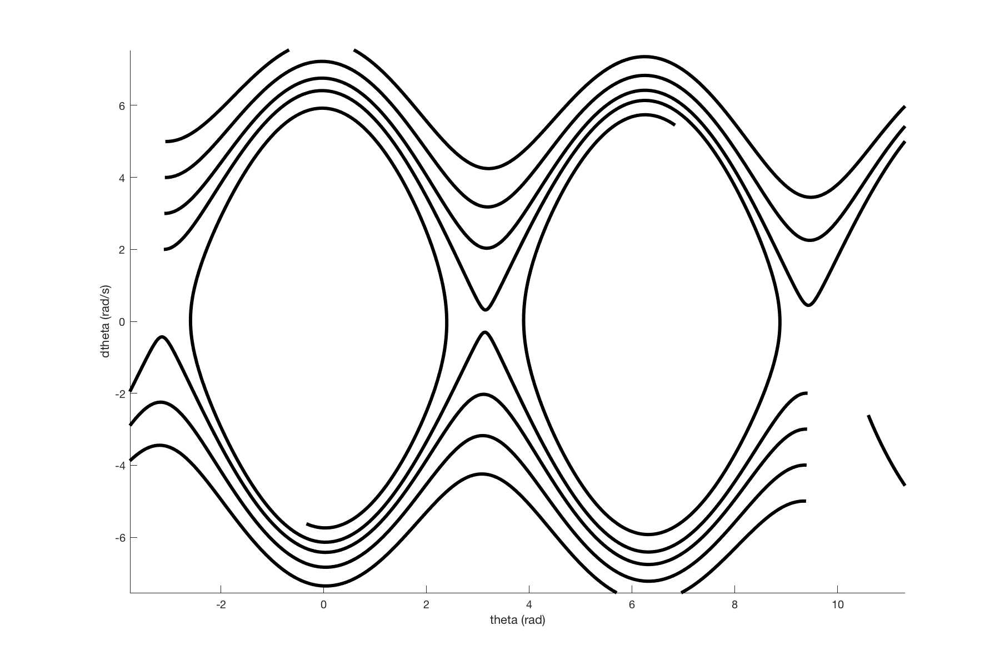
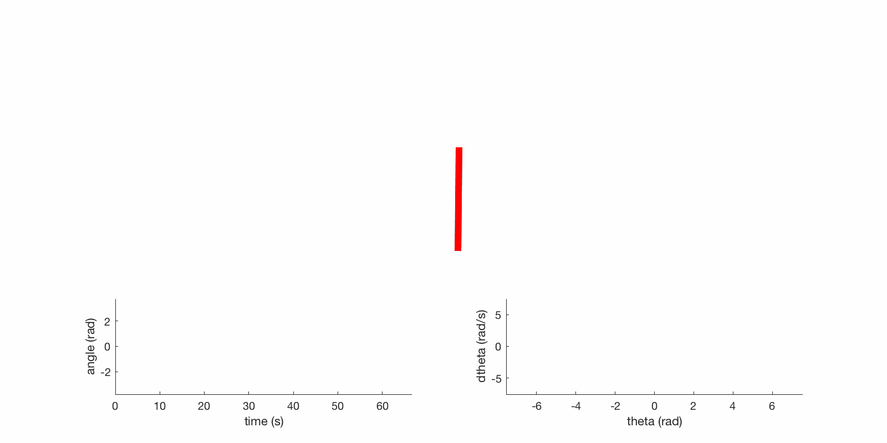

Many dynamics and controls classes spend what seems like an inordinate amount of time studying the pendulum, how it moves, how it can be balanced upside down and so on. It seems like a toy system, an easy mathematical starting point that's still moderately illustrative of more interesting things to come. But look around and the pendulum analogy pops up everywhere from chemistry to walking robots (pendulums are often used when discussing large numbers of simple oscillators and their interactions). In this post I'm going to talk about the walking robots.
The first person credited with robotic pendulum balancing is Claude Shannon, in 1951 he built a broomstick balancing robot and then convinced his friends to build and control a double pendulum. Shannon's system used a little cart that drove back and forth at the base of the broomstick to balance it [Raibert], this problem is very similar to balancing a broomstick on your hand. If we simplify the system further, the broomstick is an object with a center of mass and a point on the ground where it receives contact forces. This is interesting because if we make a simple model of a human standing, the human has a center of mass and some number of feet contacting the ground. We can model the contact forces on the human's foot or feet using a single net force which acts somewhere between the two feet (inside the convex hull of the feet). This point is called the center of pressure. So now we have a human that has a center of mass and a contact point (center of pressure) and contact forces which can vary in time, this is exactly our inverted pendulum.
Interestingly, if we neglect rotational inertia, the net contact force must act along the line from the center of mass to the center of pressure. This means that the only real way to balance would be to move the center of pressure around and we do this by shifting our weight between our feet or by taking a step. This assumption that we can neglect rotational inertia is ok in some ways because it simplifies the problem significantly, but its also unfortunate because much of the interesting dynamic behavior humans are capable of is enabled by strategic use of angular momentum (think swinging your arms). So although it is a valid assumption, by using it, we are limiting the behavior that we can get from the system.
You can also model walking and running using the inverted pendulum. When in stance, forces act from the foot, when in flight the system obeys a ballistic trajectory and so it is easy to predict where it will end up. The foot locations can be controlled in order to control force direction in order to allow for continued running.
This is how the robots at the Leg Lab in the 1980's walked autonomously [
video], and it is also how more modern robots like Little Hermes can accurately reproduce the motions of human operators while remaining balanced [
video]. For more information on using the inverted pendulum control for legged robots, I would suggest reading Mark Raibert's book and Joao Sousa's thesis.
Pendulum Energy Shaping + LQR
A simple example in Russ Tedrake's Underactuated Robotics notes is the pendulum swing up using energy shaping and stabilization using LQR. I'd heard a lot about LQR and the pendulum seemed like the right place to start.
Setting up this controller helped me understand how state space works a little better. Interestingly, euclidian distance in state space often is not useful. As an example, multiple trajectories of the pendulum may be right next to each other in state space, but it may be impossible to get from one to the other.
Here are some trajectories in pendulum state space:
 State space trajectories of initial conditions on either side of unstable upright equilibrium.
State space trajectories of initial conditions on either side of unstable upright equilibrium.
|

Some state trajectories, helps illustrate the structure of the space.
|
Swing up and stabilize gif:

The red line in the left plot is actuator torque and the black line is angle.
For this project I found the following resources helpful:
October 14, 2018 (revised Nov. 14, 2019)